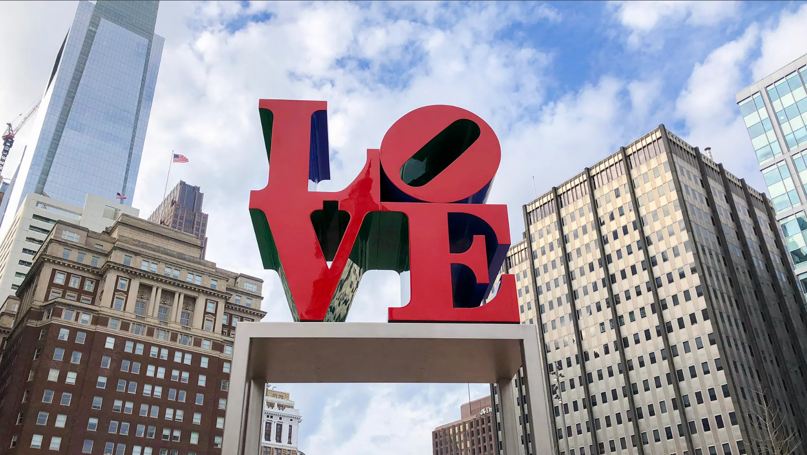

Experiment 5 - Generative Impressions
Mutation rate (%):
Active score:
Exploration rate: fps
Best score:
Description
Randomly attempts to replicate images of iconic landmarks

Technical
The shapes placements, sizes, and colors are all randomized. The randomization of the shapes placements can be adjusted using the mutation rate.
Reflection
The use of each image using different shapes makes the generative art looks unique that reflects on the design or the message of the landmarks. I was unable to figure out how to design a heart in p5.js, so I took and modified the code from an existing p5.js project called "Heart Shape" by Mithru, to use hearts.